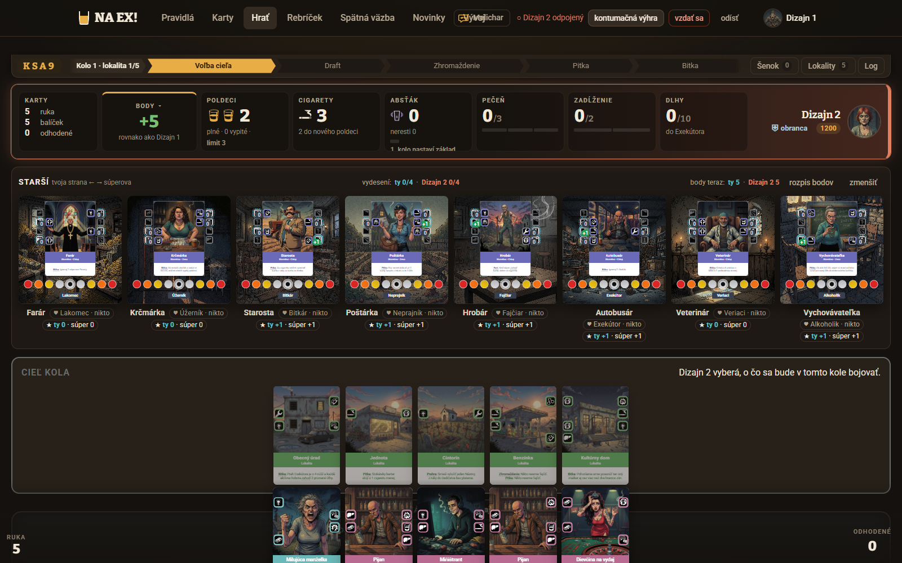
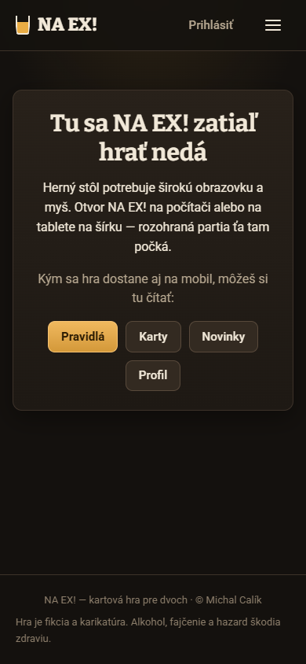
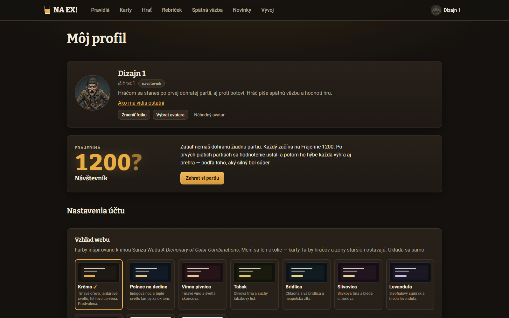

Profily hráčov a podrobné štatistiky
Verdikt
Profil už existuje (/hrac/:id, Statistiky.tsx). Je to však súčet celej histórie: 45 čísel v 8 rovnocenných sekciách, bez porovnania, bez trendu, bez detailu partie. Hráč z neho nevyčíta, čo má urobiť inak. Navyše dnes každý prihlásený vidí každého, aj AI playtesterov a ich posledných 25 partií (api.ts:411). Nové zadanie to zakazuje, takže viditeľnosť treba vyriešiť na serveri ako prvú.
Najviac hráča naučí Rozbor partie po bitkách (priebeh bodov, kto vyhral, NA EX a odpoveď, pas) a krátky súhrn posledných 20 partií, ktorý ukáže najviac 2 silné a 2 slabé stránky. Porovnávať treba hlavne so súpermi v tých istých partiách: priemer hráčov dnes neexistuje, na živom webe je 0 archivovaných partií ľudí. Údaje po kolách sa dnes neukladajú a spätne sa dopočítať nedajú. Ich zber treba zapnúť čo najskôr, kým je archív prázdny a nič sa nestratí.
1. Čo je dnes a toky
Snímky sú zo servera tejto vetvy (localhost:8800, dočasná databáza bez dohratých partií). Profil s dátami sa preto nedá odfotiť. Opis plných stavov je z kódu.

Panely.tsx:416).

/profil dnes: nastavenia účtu a štatistiky na jednej stránke (Ucet.tsx:335–415). Prázdny stav naviguje dobre („Zahrať si partiu“). Partie s botom sa však do profilu nedostanú (server.ts:573), takže hráč, ktorý hral len s botom, tu vidí „Zatiaľ nemáš dohranú žiadnu partiu“.Hlavné úlohy a ich cena dnes
| Úloha (čo chce hráč dosiahnuť) | Dnes | Cena / slepá ulička |
|---|---|---|
| U1 Po partii pochopiť, prečo vyhral alebo prehral | Okno konca hry: skóre, rozpis po starších, zmena Frajeriny (KoniecHry.tsx). Po zatvorení nič. | Slepá ulička. Riadok v „Posledné partie“ nie je klikateľný, dôvod je len v title (Statistiky.tsx:337). AI hráč si priebeh bodov po bitkách skladal ručne z logu (citát nižšie). |
| U2 Zistiť, v čom sa zlepšuje a kde stráca | Súčty celej histórie v 8 sekciách, percentá bez počtu partií. | Musí si pamätať čísla z minula a porovnávať v hlave. Žiadny trend ani porovnanie (rozpoznanie vs. pamäť). |
| U3 Pri stole zistiť, kto je súper | Meno, avatar, Frajerina v doske súpera. | Žiadny odkaz. Keby tam odkaz bol, odchod z /hra zatvorí spojenie (useHra.ts:200) a súper si po 3 minútach môže vyžiadať kontumáciu (server.ts:83). |
| U4 Z Frajeriny alebo Spätnej väzby pozrieť človeka | Odkaz na /hrac/:id pri každom riadku aj autorovi (Rebricek.tsx:89, SpatnaVazba.tsx:171). | Funguje, ale vedie aj na AI playtesterov a ukáže všetko vrátane ich partií. |
| U5 Správca: ako hrá konkrétny AI playtester, čo sa stalo v partii X | /hraci → profil (súčty). | Detail partie neexistuje. Tempo (tempo_partii) nie je spárované s hráčom, len s kódom miestnosti. |
„Priebeh bodov: po K1 6 : 19, po K2 2 : 15, po K3 2 : 43, pred K4 2 : 52, po K4 25 : 39, po K5 49 : 18 (!) … Pred poslednou bitkou som viedol len o 8 bodov a posledná bitka rozhodla.“ (AI hráč, playtest/20261022-065959-1/hrac1/feedback.md:4, k tomu tabuľka bitiek s U/O a odpoveďou na NA EX v riadkoch 6–17)
„chýba mi … história bitky (po cakaj ostanú len udalosti od posledného volania; log bitky som musel čítať z priebeh.log)“ (tamže, :35)
„Pas je pasca pre všetkých, ktorí počítajú.“ (tamže, :24). Hráč chce vedieť, či sa mu rozhodnutie oplatilo, a na to potrebuje pas a výsledok tej bitky.
2. Informačná architektúra a vstupné body
Navrhujem tri stránky a jednu kartu v hre. Profil je jedna stránka pre vlastný aj cudzí pohľad. Server podľa toho, kto sa pozerá, pošle viac alebo menej. Nastavenia účtu sa oddelia, aby profil nebol zmes „čo o mne vedia ostatní“ a „moje heslo a farby“.
Cesty (vlastný router apps/web/src/lib/router.tsx, regexy ako dnes)
| Cesta | Obsah | Kto | Poznámka |
|---|---|---|---|
/hrac/:id | Profil: hlavička, Frajerina, záložka Súhrn | prihlásený; AI len správca | Dnešná stránka. „Ako ma vidia ostatní“ sa nahradí prepínačom Zobraziť ako cudzí na vlastnom profile. |
/hrac/:id/partie | Zoznam partií s filtrom | vlastník, správca | Ostatní túto záložku nevidia (nie je zamknutá, chýba úplne). |
/hrac/:id/kronika | Súčty za celú históriu, rekordy, súperi | vlastník, správca (cudzí: otázka O2) | Sem sa presunie väčšina dnešných 45 čísel. |
/partia/:id | Rozbor partie | účastník, správca | Partia je jedna, pohľady sú dva. Server pošle stranu podľa toho, kto sa pýta. |
/profil | Nastavenia účtu | prihlásený | V menu „Nastavenia“. Položka „Môj profil“ (Layout.tsx:94) povedie na /hrac/:moje-id. |
Vstupné body
| Odkiaľ | Čo sa stane | Pravidlo |
|---|---|---|
| Herný stôl: klik na meno alebo avatar súpera | Bublina „Karta súpera“ pri doske, nemodálna (N2) | Nesmie opustiť /hra. Nezoberie fokus, keď súper ťahá, nezakryje pokyn ani tlačidlá ťahu. Odkaz „Celý profil“ otvorí novú kartu prehliadača. |
| Okno konca hry | Nové tlačidlo „Rozbor partie“ vedľa „pozrieť stôl“ | Hlavné tlačidlo ostane „späť do lobby“, rozbor je druhý. |
| Môj profil → Partie | Riadok partie → Rozbor. Meno súpera → jeho profil. | Celý riadok je odkaz na rozbor, meno súpera je samostatný cieľ (44 px na mobile). |
| Frajerina (rebríček) | Riadok → profil | AI účet: hráč ho nevidí, alebo vidí bez odkazu (otázka O4). |
| Spätná väzba: meno autora | Profil autora | AI autor: meno a odznak AI bez odkazu. |
| Správa → Hráči | Profil kohokoľvek, aj AI | Na AI profile je pás „Skrytý profil: hráči ho nevidia“. |
3. Kto čo vidí
Riadok je ten, kto sa pozerá. Stĺpec je, na koho profil sa pozerá. „Hráč“ znamená úroveň hráč a nižšie, teda aj prihlásený návštevník bez partie. Neprihlásený nevidí nič, ako dnes (prihlaseny(), api.ts:412).
| Pozerá sa ↓ / na → | Vlastný profil | Cudzí človek | AI playtester | Bot |
|---|---|---|---|---|
| Neprihlásený | nič (prihlás sa) | nič (otázka O8) | nič | nič |
| Návštevník / hráč | všetko: hlavička, Frajerina a graf, súhrn so silnými a slabými stránkami, filter Ľudia/Boti/Spolu, zoznam partií, rozbor každej partie, kronika | časť: hlavička, Frajerina a graf, bilancia, forma (posledných 5 výsledkov), vzájomná bilancia „vy dvaja“, súhrn len z partií s ľuďmi. Nie: zoznam partií, rozbor, partie s botmi po jednom. Silné a slabé stránky: otázka O1. | nič. Meno a odznak AI bez odkazu. API vráti 404 ako pri neexistujúcom účte. | nič (bot nemá účet). V partii: meno a povaha. V mojich partiách: „Teta Gizka (bot)“ bez odkazu. |
| Subadmin | všetko | všetko ako vlastník, aj rozbory partií | všetko + pás „Skrytý profil“ | nič (štatistiky botov patria do Tvorby a tools/bot/turnaj.ts) |
| Admin | všetko | všetko + tempo partie a surové dáta (JSON) | všetko + tempo a surové dáta | nič |
Rozbor partie, ktorej sa hráč zúčastnil
Partia má dvoch účastníkov. Ak by „detail vidí len vlastník“ platil doslova, súper by nevidel ani rozbor partie, ktorú sám hral. Navrhujem: každý účastník vidí rozbor zo svojej strany, teda svoje plné štatistiky a z čísel súpera len to, čo bolo na stole verejné (výsledky bitiek, poškodenie, body, verejné počty kliatob, NA EX, pas, šenok). Súperove karty z ruky, Vízia ani výmena kariet zo Starostu sa nepošlú. Rozbor cudzej partie, v ktorej hráč nesedel, nedostane nikto okrem správcu. (Otázka O5.)
Ako to vynúti server (nie rozhranie)
GET /api/hraci/:id: hlavička, Frajerina, súhrn (pre cudzieho lenfilter=ludia), vzájomná bilancia s volajúcim. Akciel.ai && !jeSpravca(ja.rola), vráti 404 „Taký hráč neexistuje.“ To isté hlási neexistujúci účet, takže odpoveď neprezradí, že účet existuje.GET /api/hraci/:id/partiea/kronika: lenja.id === idalebo správca. Inak 404.GET /api/partie/:id: účastník dostane svoju stranu plnú a súperovu verejnú, správca obe plné a tempo. Inak 404. Súperova strana sa filtruje funkciou typuverejneStatistiky()vpackages/core(rovnaká zásada akoviewFor()) a dostane test.GET /api/rebricek: AI riadky pošle len správcovi (alebo sai: truea bezid, podľa O4).- Správa
hracivo websockete (server.ts:319) dostane poleprofil: "verejny" | "skryty" | "ziadny". Klient podľa neho vie, či kartu súpera vôbec otvoriť. Rozhodnutie robí server. - Súhrn sa počíta na serveri. Klient cudzieho hráča nikdy nedostane riadky jednotlivých partií. Riziko (odhad): kto si súhrn cudzieho hráča stiahne pred jeho partiou a po nej, z rozdielu vyráta čísla poslednej partie. Partia je už dohratá, takže to nie je skrytá herná informácia. Ak to Michal chce zakázať, cudzí súhrn sa môže prepočítavať raz denne.
4. Audit použiteľnosti
Závažnosť podľa Nielsena: 4 = katastrofa, 3 = veľký problém, 2 = menší, 1 = kozmetika, 0 = len poznámka.
| # | Problém | Heuristika | Záv. | Dôkaz | Koho a ako často |
|---|---|---|---|---|---|
| A1 | Profil ktoréhokoľvek účtu, aj AI playtestera, dostane každý prihlásený, vrátane 25 posledných partií a súperov. | Prevencia chýb, súkromie (nové zadanie) | 4 | api.ts:411–417 kontroluje len prihlaseny(). archiv.ts profil() vracia všetko. | Všetci, vždy. Nová funkcia bez opravy by porušila pravidlo „server nepošle, čo hráč nemá vidieť“. |
| A2 | AI playtesteri sú vo Frajerine medzi ľuďmi a dá sa na nich kliknúť. | Zhoda so svetom (rebríček ľudí), konzistencia | 3 | archiv.ts rebricek() nefiltruje u.ai. Odkaz v Rebricek.tsx:89. | Každý návštevník rebríčka, kým hrajú AI turnusy. |
| A3 | Partia sa nedá rozobrať. Riadok v zozname nie je odkaz, dôvod konca je len v title. | Viditeľnosť stavu, slepá ulička | 3 | Statistiky.tsx:337. Citát hráča o ručnej tabuľke bitiek (feedback.md:4–17). | Každý hráč po každej partii. Je to hlavná úloha U1. |
| A4 | Partie s botom sa do profilu nedostanú. Nový hráč, ktorý začína s botom, má prázdny profil. | Viditeľnosť stavu, prázdny stav klame | 3 | server.ts:573 (room.bot === null). Statistiky.tsx:399 hlási „Zatiaľ nemáš dohranú žiadnu partiu.“ | Noví hráči. Odhad: väčšina prvých partií je s botom (súper nečaká). |
| A5 | Odkaz na súpera počas partie by hráča vytrhol zo stola: spojenie sa zavrie a po 3 min hrozí kontumácia. | Kontrola a sloboda, prevencia chýb | 3 | useHra.ts:194–200, server.ts:83 (KONTUMACIA_PO_MS) | Každý, kto by klikol na súpera. Ide o návrhové obmedzenie pre vstup 1. |
| A6 | Profil je súčet celej histórie: 45 rovnocenných čísel v 8 sekciách, bez hierarchie a bez odpovede na otázku „čo mám robiť inak“. | Minimalizmus, kognitívna záťaž | 2 | Statistiky.tsx:466–540 (Bodovanie, Bitky, Poškodenie, Pečeň, Povery, Dlhy, Neresti, Starší, Partie, Akcie) | Každý návštevník profilu. S rastúcou históriou sa čísla prestanú hýbať a nový návyk v nich zanikne. |
| A7 | Percentá bez počtu („vyhraných 100 %“ z 1 bitky) pôsobia ako fakt. | Zhoda so svetom, prevencia mylných záverov | 2 | percento() v Statistiky.tsx:475–478. Počet je len v title. | Noví hráči (1–5 partií), teda práve tí, čo sa učia. |
| A8 | Vysvetlivky sú len pri hovere (title). Na dotyku a pre čítačku nie sú. | WCAG 1.4.13, mobil | 2 | Udaj v Statistiky.tsx:224, BilanciaPruh, tabuľka partií | Mobil vždy. Michal žiada, aby stránky mimo hry fungovali na mobile. |
| A9 | Partie rôznej dĺžky (5/7/11 lokalít) sa sčítajú a delia „na partiu“, takže priemery sa nedajú porovnať. | Zhoda so svetom | 2 | priemer(s.dlhyZiskane, s.partie) v Statistiky.tsx:515. Dĺžka nie je v tabuľke partie, len v tempo_partii.dlzka. | Každý, kto hrá rôzne dĺžky. |
| A10 | Meno AI autora v Spätnej väzbe je odkaz. Po zavedení skrytia by viedol na 404. | Konzistencia, slepá ulička | 2 | SpatnaVazba.tsx:171 (odkaz) vedľa odznaku AI (:175) | Čitatelia Spätnej väzby. AI píše časť názorov. |
| A11 | Nastavenia účtu a štatistiky sú na jednej stránke „Môj profil“. Vlastný profil má dve rôzne podoby (/profil a „Ako ma vidia ostatní“). | Konzistencia | 1 | Ucet.tsx:354, 413, 415, menu Layout.tsx:94–99 | Každý hráč. Mätie, ktorá podoba je „tá pravá“. |
| A12 | Pravidlá a sada sa menia takmer denne. Súčty miešajú partie podľa rôznych pravidiel bez označenia. | Viditeľnosť stavu | 1 | partie.verzia_sady sa ukladá, profil ho nepoužíva | Dlhodobí hráči. Dnes málo, neskôr viac. |
| A13 | Herný stôl sa na mobile nehrá, takže karta súpera je len desktopová. | (poznámka) | 0 | snímka vyššie | Profil, rozbor a Frajerina musia byť plne mobilné. |
5. Výber metrík: čo učí a čo je šum
Metrika má zmysel, keď hráč z nej pochopí, čo môže v ďalšej partii urobiť inak. Preto ju normujem na bitku (lokalitu), nie na partiu: krátka hra má 5 bitiek, dlhá 11. Body sú výnimka, tie sa rátajú na bodovanú partiu a porovnávajú len s partiami rovnakej dĺžky.
Učiace metriky (Súhrn a Rozbor)
| Metrika | Čo hráča naučí | Definícia | Dáta dnes | Kde |
|---|---|---|---|---|
| Odkiaľ berieš body | Kde body získava a kde ich necháva (lokality vs. strach starších vs. Dlhy) | bodyPodla: lokality, starší (patronát), znepokojenie, strach, vydesenie, cigarety, −Cirhóza, −Dlhy. Na bodovanú partiu, ty vs. súper. | áno | Súhrn, Rozbor |
| Bitky ako útočník / obranca | Či vie využiť rolu (útočník berie zo šenku prvý, obranca volí cieľ) | % vyhraných bitiek v každej role, s počtom | áno | Súhrn, Rozbor |
| Bilancia poškodenia na bitku | Či stavia silnú líniu, alebo vyhráva tesne | tuhé + mäkké udelené − obdržané, na bitku | súčty áno, po bitkách nie | Súhrn, Rozbor |
| NA EX: úspešnosť | Hlavná páka hry. Vyplatilo sa, alebo ho súper odpoveďou otočil? | Zmena odhadu bitky (rozdiel tuhého ja − on cez poskodenieBitky, engine.ts:745) pred NA EX a po súperovej odpovedi. „Vyplatilo sa“ = zlepšenie > 0. K tomu: bitky vyhrané s mojím NA EX. | nie (len počet) | Súhrn, Rozbor |
| Odpoveď na NA EX | Či vie trestať súperovo NA EX | Počet odpovedí a koľkokrát odpoveď otočila víťaza odhadu | nie | Rozbor, Súhrn |
| Pas | „Pas je pasca“. Oplatí sa mi pas za cigarety? | Počet pasov, cigarety za pas, výsledok bitky po pase | nie | Rozbor, Súhrn |
| Dlhy | Koľko bodov ho stoja Dlhy a či sa ich vie zbaviť | získané, zbavené, na konci a −body, na bitku | áno okrem „na konci“ | Súhrn, Rozbor |
| Cirhózy a pečeň | Riziko pitia | poškodenie pečene na bitku, Cirhózy získané/priznané, liečby, pohreby | áno | Súhrn, Rozbor |
| Starší | Hra o strach (druhá cesta k víťazstvu) | vydesení na konci, patronáty, posuny prebytkom a Pohoršením | áno | Súhrn, Rozbor |
| Priebeh bodov a zlom | Ktorá bitka partiu rozhodla, koľko sa preklopilo | body oboch po každej bitke (bodyTeraz, view.ts:301), zmena rozdielu | nie | Rozbor; v Súhrne „náskok pred poslednou bitkou udržaný x z n“ |
| Ekonómia cigariet | Kam tečú cigarety a koľko bodov dali zvyšné | získané; minuté na šenok, pas, barter, Dedičstvo, dolievanie, Starostu; zvyšné na konci | získané a minuté áno, účel nie | Rozbor |
| Šenok | Či kupuje veľa, alebo málo kariet | karty a cigarety za šenok na kolo | nie (na hráča) | Rozbor |
| Tvoje karty | S čím hrá a čo mu vyhráva | top 5 vyložených, zo šenku, cieľov NA EX; bitky vyhraté s kartou v línii | nie (partie.karty je za oboch spolu) | Rozbor, neskôr Súhrn |
Šum: do Kroniky alebo len pre správcu
- Súčty za celú históriu (vyložených kariet 412, ťahov 1 893, pri stole spolu 31 h): kronika, pre radosť, nič neučia.
- Rekordy (najväčší zásah, najviac bodov v partii): kronika.
- Aktívne akcie po druhoch (Rana, Pecka, Petelica…): závisia od toho, čo prišlo do šenku. Patria do rebalansu v Tvorbe, nie hráčovi.
- Ťahy na partiu: závisia od dĺžky a od toho, ako sa ráta „ťah“. Šum.
- Bartery, dolievania, Povery účinné, karty do súperovej: len v Rozbore partie, v súhrne nie.
- Tempo (čas na ťah, fázy): správca. Hráčovi nanajvýš „priemerná partia trvá 48 min“ v kronike.
Ako ukázať silné a slabé stránky bez záverov z 3 partií
6. Dátový model
V jednom odseku. Dnes sa pri konci partie s dvoma ľuďmi (aj AI) zapíše riadok do partie (kód, časy, víťaz, dôvod, kolá, verzia_sady, dohrata, karty = štatistiky kariet za oboch hráčov spolu) a dva riadky do partie_hraci (výsledok, body, Frajerina pred a po, statistiky = JSON StatistikyHraca s asi 45 súhrnnými poľami zo zapisTah/uzavriStatistiky). frajerina drží aktuálny stav a tempo_partii čas po fázach aj pre partie s botom, ale bez väzby na hráča. Partie s botom sa do archívu nezapisujú (server.ts:573). Neukladá sa nič po kolách: seed, príkazy, udalosti, konečný stav ani verzia jadra. Bitky po kolách, úspešnosť NA EX, pas, šenok na hráča ani body súpera po bitkách teda nie sú. Vyloženia z príkazu „tah“ sa od 19. 10. do dnešnej opravy nerátali. Navrhujem minimálne rozšírenie: (1) archivovať aj partie s botom: partie.s_botom + bot_povaha, bot v partie_hraci s pouzivatel NULL, Frajerina sa nemení a rebríček filtruje s_botom = 0; (2) partie.dlzka a partie.verzia_jadra (commit buildu); (3) StatistikyHraca v2 s v: 2 a novými skalármi (pasy, cigarety za pas, šenok karty a cigarety, minuté cigarety podľa účelu, NA EX zlepšenie a vyhraté s NA EX, odpovede na NA EX, zvyšné cigarety, Dlhy na konci, malá mapa karty defId → vyložené/zo šenku/NA EX); (4) nové pole partie.kola (JSON, jedno pre partiu, obe strany): pre každú bitku lokalita, útočník, počet Pitiek, tuhé a mäkké oboch, víťaz alebo sekera, prebytok a komu, zoznam NA EX (kto, na čiu kartu, odhad pred a po odpovedi), pas (kto, cigarety), šenok (karty, cigarety), patronát, kliatby v kole a bodyPo oboch. Všetko sa odvodí z udalostí a stavu v čistom kóde packages/core (rovnaký vzor ako zapisTah, bez I/O). Motor potrebuje nanajvýš jednu verejnú udalosť navyše. Voliteľne (5) partie.seed + partie.prikazy (JSON [miesto, Command], odhad 20–50 kB na partiu) na budúci replay. Ten však funguje len s rovnakou verziou jadra, preto je potrebný (2). Staré partie sa dopočítať nedajú (chýbajú udalosti aj seed). Ostanú s v: 1 a súhrn pri každej metrike ukáže, z koľkých partií je. Na živom webe je dnes 0 partií ľudí, takže na tom prakticky nezáleží. Dôležité je zapnúť zber čo najskôr.
Podrobne: polia, odkiaľ sa vezmú a čo sa nedá
| Nové pole | Zdroj v jadre | Staré partie |
|---|---|---|
kola[i].bodyPo | bodyTeraz nad stavom po bitkaVysledok (čisté; na serveri nad plným stavom) | nedá sa |
kola[i].tuhe/makke/vitaz/prebytok | udalosť bitkaVysledok (už dnes) | nedá sa (dnes sa len sčítajú) |
kola[i].pitky, utocnik, lokalita | faza udalosti, pred.utocnik, state.ciel | nedá sa |
naex[].odhadPred/odhadPo | poskodenieBitky pred príkazom naex a po ďalšom príkaze súpera (place v odpovedi alebo bezReakcie). Absťáky v ruke sú na serveri známe, zapisujú sa len do štatistík, nie klientovi. | nedá sa |
pasy, cigaretyZaPas | príkaz pass + rozdiel cigariet | nedá sa |
senokKarty, cigaretyZaSenok | príkaz draftBer (počet uid) + rozdiel cigariet | nedá sa |
cigaretyMinute podľa účelu | typ príkazu, ktorý cigarety ubral (draftBer, pass, barter, place do Dedičstva, refillPoldeci, starosta, vykup, smoke) | len súčet (dnes cigaretyMinute) |
dlhyNaKonci, zvysneCigarety | konečný stav v uzavriStatistiky | Dlhy nepriamo z bodyPodla.dlh |
karty (na hráča) | ako zapisTahKariet, len s rozlíšením hráča | nedá sa (dnes za oboch spolu) |
partie.dlzka | room.dlzka | dá sa: join na tempo_partii podľa kod + koniec (kód sa môže opakovať, preto aj čas) |
partie.s_botom | room.bot | staré sú všetky bez bota |
tempo_partii.partia (FK) | id z archívu pri zápise | dá sa párovať ako dlzka |
Pozor pri archivovaní partií s botom: DOHRATE_SQL (auth.ts:93) ráta dohraté partie z partie_hraci. Ak sa partie s botom začnú archivovať, povýšenie na hráča „aj po partii s botom“ (Michal 2026-10-21) sa zjednoduší, ale štatistiky webu a /vyvoj, ktoré čítajú partie, musia filtrovať s_botom = 0 všade, kde dnes predpokladajú len ľudí (napr. statistikyKariet(lenLudia)).
7. Návrhy
Päť návrhov od rýchlej poistky po odvážny smer. Čísla v drôtených modeloch sú ilustračné (priebeh bodov v N3 je z playtestu 20261022-065959-1).
8. Odporúčané poradie
- N1 Strážca viditeľnosti (malá). Bez neho nová funkcia porušuje maticu aj pravidlo projektu. Platí aj pre dnešný profil.
- N3, dátová časť:
StatistikyHracav2,partie.kola, archív partií s botom,dlzka,verzia_jadra. Na rozdiel od rozhrania sa dáta nedajú dorobiť spätne. Každý deň bez zberu sú partie navždy bez rozboru. Ak Michal súhlasí, ajseed+prikazy(lacné, otvára N5). Session New features to vie pripraviť. - N3, stránka Rozbor partie + tlačidlo v okne konca hry. Hráč dostane odpoveď na najčastejšiu otázku hneď.
- N4 Súhrn s prahmi pre malé vzorky. Zmysel má, keď majú hráči aspoň 5 partií, takže môže prísť o krok neskôr.
- N2 Karta súpera. Malá, dá sa zaradiť kedykoľvek po N1.
- N5 Prehrávanie, keď sa pravidlá ustália.
Koordinácia s UI návrhom: vzhľad hlavičky profilu, kariet stránok a grafu rieši UI návrh. Tento dokument určuje, čo na obrazovkách je, pre koho a v akom poradí.
9. Otázky
Na Michala
- O1. Má cudzí hráč vidieť aj silné a slabé stránky súpera? Odporúčam nie: súhrn áno, ale „Tu ťa to stojí“ je osobná rada a ako skauting súpera by menila tón krčmy. Ak áno, rovnaká karta, len v tretej osobe.
- O2. Má cudzí vidieť Kroniku (rekordy, súčty, súperov)? A zoznam výsledkov partií bez rozboru (dátum, súper, výsledok)? Navrhujem len formu (5 posledných výsledkov) a vzájomnú bilanciu.
- O3. Od koľkých partií ukazovať súhrn a stránky? Navrhujem: čísla od 1 s počtom, stránky od 5 (predbežné do 20), trend od 10.
- O4. AI playtesteri vo Frajerine: skryť ich hráčom úplne, alebo nechať riadok s odznakom AI bez odkazu? A ráta sa partia človeka proti AI agentovi do jeho Frajeriny?
- O5. Vidí účastník v rozbore svojej partie aj súperove čísla z tej partie (len verejné na stole)? Odporúčam áno, inak sa „ty vs. súper“ nedá ukázať.
- O6. Súkromie: dá sa profil skryť? Návrh: prepínač v Nastaveniach „Skryť môj súhrn pred ostatnými“. Meno, Frajerina a forma ostanú, lebo rebríček je verejný v rámci prihlásených.
- O7. Priemer hráčov: proti všetkým, alebo proti hráčom v podobnom pásme Frajeriny (±150)? A od koľkých hráčov ho ukazovať (návrh: 10 s 5+ partiami v rovnakej dĺžke hry)?
- O8. Má profil (aspoň hlavičku a Frajerinu) vidieť aj neprihlásený, ako verejnú stránku
/vyvoj? Dnes nie. - O9. Pravidlá sa menia takmer denne: miešať v súhrne partie naprieč verziami sady, alebo pridať prepínač „len aktuálne pravidlá“? Navrhujem miešať, ale v grafe trendu označiť zmenu verzie.
- O10. Ukladať seed + príkazy + commit jadra už teraz (odhad 20–50 kB na partiu), aj keď replay (N5) príde neskôr?
- O11. Vzdané a kontumované partie: do bilancie áno (ako dnes vo Frajerine), do metrík súhrnu len dohraté? A partie s botom v cudzom profile: ukázať aspoň počet („s botmi 14, 9–5“), alebo vôbec?
Do playtestu
- Po partii (človek aj AI): „Otvor Rozbor partie. Ktorá bitka rozhodla a prečo?“ Sledovať čas do odpovede a či odpoveď sedí s ručnou tabuľkou AI hráča.
- „Prečítaj si Tu ťa to stojí. Súhlasíš? Čo urobíš inak v ďalšej partii?“ Overené, keď hráč pomenuje konkrétny ťah (napr. „menej pasov za cigarety“).
- Počas partie: „Pozrel si si súpera? Vyrušilo ťa to?“ V logu sledovať odpojenia počas partie.
- Na mobile: „Nájdi svoju poslednú prehru s človekom a zisti, koľko ťa stáli Dlhy.“ Počet ťukov a slepé uličky.
- Hráč so 3 partiami: „Čo ti profil hovorí?“ Nesmie vyvodiť záver, ktorý mu profil na 3 partiách nedáva.
Podklady: kód vetvy dizajn/profily (apps/web/src/stranky/Statistiky.tsx, Ucet.tsx, Rebricek.tsx, SpatnaVazba.tsx, hra/Panely.tsx, hra/useHra.ts, hra/KoniecHry.tsx, packages/server/src/{api,archiv,server,db,tempo,frajerina,auth}.ts, packages/core/src/{statistiky,statistikyKariet,engine,view}.ts), playtest 20261022-065959-1, doplnenie od session New features (dáta). Pracovné poznámky: playtest/dizajn/profily-20261022-1409/ux-poznamky.md.